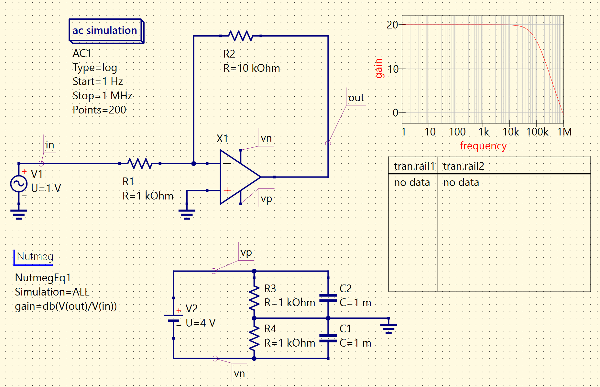

PROJECT 06 / ELECTRONIC CIRCUIT DESIGN
Electronic Circuit Design
A laser tag receiver circuit I designed and physically built, plus op-amp gain-bandwidth analysis for ECEn 340.

01 / OVERVIEW
The project
For ECEn 340: Electronic Circuit Design, I designed and physically built a circuit for a laser tag receiver. The schematic above documents the receiver design, including its input circuitry and op-amp band-pass filter stages.
I also analyzed an op-amp's gain-bandwidth product (GBW), examining how its gain changes with frequency. The analysis is shown in the project image below.
02 / SYSTEM OUTLINE
How it connects
The receiver project took me from circuit design and simulation to a physical build. The separate op-amp analysis focused on frequency response and gain-bandwidth product.
03 / COMPONENTS
Hardware & software
- Laser tag receiver circuit: designed and physically built by me.
- Op-amp band-pass filter stages in the receiver design.
- Separate op-amp gain-bandwidth product (GBW) analysis.
04 / PROJECT IMAGES
A closer look

